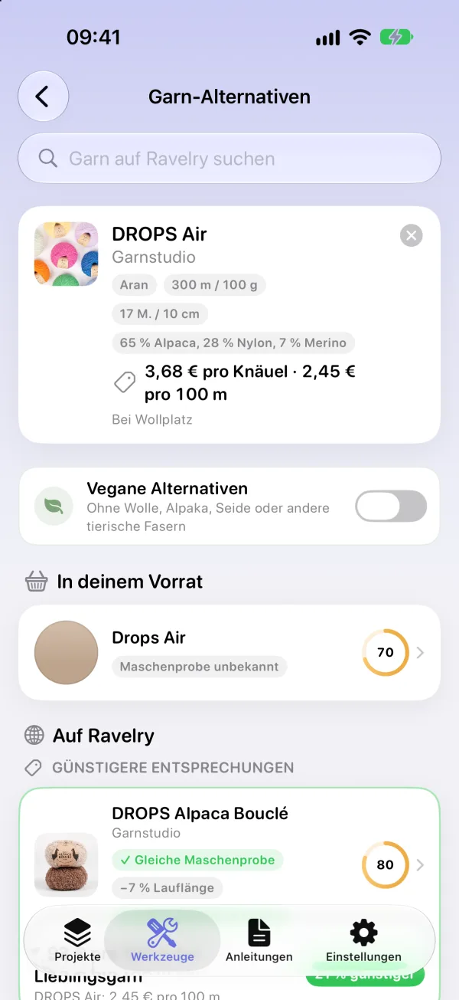

Garnvorrat verwalten mit der App
Ein paar Knäuel aus dem Sale, Reste vom letzten Pullover, ein Mitbringsel aus dem Wollladen im Urlaub: Der Wollvorrat wächst fast von allein. Und irgendwann stehst du im Laden und fragst dich, ob du genau dieses Merino nicht schon zu Hause hast. Mit YarnSpace hast du deinen Garnvorrat auf iPhone, iPad und Mac immer dabei – mit allem, was du besitzt, wie viel davon und was du daraus machen kannst.
Kostenlos laden · iPhone, iPad, Mac & Apple Watch · Ohne Konto
Wozu den Wollvorrat überhaupt erfassen?
Für drei Knäuel Restwolle brauchst du keine Liste. Sobald aber ein, zwei Körbe voll sind, sparst du mit einem Überblick Geld und Nerven:
- Keine doppelten Käufe mehr. Stattdessen kaufst du gezielt das eine Knäuel, das noch fehlt, in der richtigen Farbe.
- Du verstrickst, was du hast. Wer seinen Vorrat auf einen Blick sieht, findet viel leichter das passende Projekt dafür.
- Du weißt, ob es reicht. Wie viele Meter oder Gramm da sind, ist die Grundlage für die Frage, ob eine Anleitung damit aufgeht.
So hilft dir YarnSpace beim Garnvorrat
- Jedes Knäuel, das du hast, mit Marke, Farbe, Faser, Garnstärke und Lauflänge, und wie viele Knäuel du davon besitzt.
- Summen, die immer aktuell sind: Knäuel, Meter und Gramm über deinen ganzen Vorrat.
- Eine Wunschliste für Garne, die du gern hättest – praktisch beim nächsten Besuch im Wollladen.
- Anleitungen zum Garn. Wähle ein Garn aus deinem Vorrat und finde Anleitungen, die dazu passen.
- Banderolen-Scan (Pro): Kamera auf die Banderole, und YarnSpace liest Marke, Garnname, Farbnummer, Fasern, Lauflänge, Maschenprobe und Nadelstärke, abgeglichen mit Ravelry. Gelesen wird nur auf deinem Gerät; das Foto wird weder gespeichert noch hochgeladen.
- Vorrat-Check in Anleitungen (Pro): Bei jeder Anleitung schaut YarnSpace, ob du das passende Garn hast oder eines, das sich genauso verarbeitet, ob es reicht und wie viele Knäuel noch fehlen.


Wenn genau das Garn nicht im Vorrat ist
Oft verlangt eine Anleitung ein Garn, das es nicht mehr gibt, das schwer zu bekommen ist oder schlicht zu teuer. YarnSpace schlägt dir Alternativen nach Maschenprobe, Lauflänge und Faser vor, auch vegane, und vergleicht sie direkt: wie viele Knäuel du bräuchtest, was sie kosten und wo du sie online bekommst. Alle Garnalternativen siehst du mit YarnSpace Pro. Worauf es beim Tauschen ankommt, erklärt unser Ratgeber Garn ersetzen.
Tipps für einen ordentlichen Wollvorrat
- Banderole aufheben, mindestens aber die Partienummer notieren. Knäuel aus unterschiedlichen Färbepartien können im fertigen Teil sichtbar voneinander abweichen.
- Reste wiegen. Ein angebrochenes Knäuel lässt sich leicht schätzen: Lauflänge geteilt durch Gewicht, mal Restgewicht. Bei 125 m auf 50 g sind das 2,5 m pro Gramm, 18 g Rest also rund 45 m.
- Nach Garnstärke sortieren, nicht nach Farbe. Ein Projekt planst du meist von der Maschenprobe aus. Liegen alle Sockengarne oder alle dicken Garne zusammen, musst du nicht lange wühlen.
- Vor Motten schützen. Wolle und andere tierische Fasern mögen Motten besonders. Geschlossene Boxen oder Beutel, ein trockener Platz und ab und zu ein Blick hinein halten den Vorrat in Schuss.
- Erst die Maschenprobe, dann das Projekt. Gerade bei Vorratsgarn ohne Anleitung zeigt dir eine Maschenprobe, welche Nadelstärke und welche Projekte passen.
Ob deine Knäuel für einen ganzen Pullover reichen, kannst du mit unserem Ratgeber Garnmenge berechnen ausrechnen.
Kostenlos, mit optionalem Pro-Abo
Garnvorrat und Wunschliste sind kostenlos, genau wie bis zu drei Projekte gleichzeitig, alle Zähler, deine Anleitungen und die meisten Rechner. YarnSpace Pro gibt es im Monats- oder Jahresabo mit einer Woche gratis. Es bringt den Banderolen-Scan, den Vorrat-Check in Anleitungen, alle Garnalternativen, unbegrenzt viele Projekte, die Apple-Watch-App und mehr.
Dein Vorrat bleibt privat: YarnSpace braucht kein Konto, verfolgt dich nicht und speichert deine Daten auf deinem Gerät und, wenn du es einschaltest, in deiner eigenen iCloud.
Häufige Fragen
Ist der Garnvorrat in YarnSpace kostenlos?
Ja. Garnvorrat und Wunschliste gehören zur kostenlosen App. YarnSpace Pro bringt den Banderolen-Scan, den Vorrat-Check in Anleitungen und alle Garnalternativen dazu.
Wie funktioniert der Banderolen-Scan?
Halte die Kamera auf die Banderole. YarnSpace liest Marke, Garnname, Farbnummer, Fasern, Lauflänge, Maschenprobe und Nadelstärke vollständig auf deinem Gerät und füllt das Garn für dich aus. Das Foto wird weder gespeichert noch hochgeladen. Der Banderolen-Scan gehört zu YarnSpace Pro.
Sagt mir YarnSpace, ob mein Garn für eine Anleitung reicht?
Ja, mit YarnSpace Pro. Bei jeder Anleitung prüft der Vorrat-Check, ob du das passende Garn hast oder eines, das sich genauso verarbeitet, ob es reicht und wie viele Knäuel noch fehlen.
Ist mein Vorrat auf allen Geräten gleich?
Ja, über deine eigene iCloud, wenn du sie einschaltest. YarnSpace braucht kein Konto; dein Vorrat liegt auf deinem Gerät und in deiner iCloud.
Dein ganzer Garnvorrat in der Tasche
YarnSpace ist die Strick- und Häkel-App für iPhone, iPad, Mac und Apple Watch. Kostenlos laden.